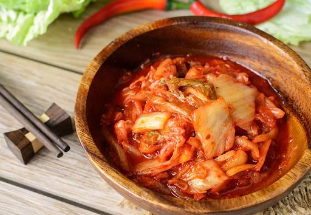
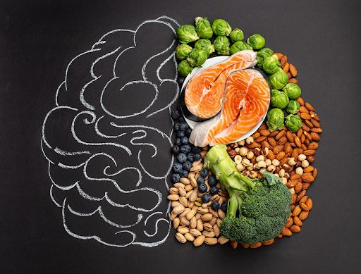

Kimchi and Gut Health: Probiotic Benefits for Digestive Wellness | Miami Kimchi
Kimchi is more than a delicious Korean staple—it’s a powerhouse when it comes to gut health and overall wellness. Fermented to perfection, this traditional dish is packed with probiotics that play a crucial role in maintaining the gut-brain axis, boosting immunity, and even enhancing mental well-being. If you’re looking to learn how kimchi can transform your digestive health, check out more about authentic kimchi at Miami Kimchi . In this guide, we’ll break down the science behind kimchi fermentation, explore its health benefits, and provide actionable tips on incorporating it into your daily routine.
The Science Behind Kimchi Fermentation and Probiotics
Understanding how kimchi is made and why it’s so good for your gut is the first step toward reaping its benefits.
Unmasking Kimchi: A Staple of Korean Cuisine
Originating from Korea's rich culinary tradition, kimchi is a vibrant and nutritious fermented dish. It is chiefly composed of napa cabbage and radishes, and its mouthwatering flavor profile is amplified with the robust addition of a spice medley. This classic mixture typically includes garlic, ginger, chili flakes, and salt. The tangy and spicy notes of kimchi stand testimony to the time-honored recipe bestowed by generations. Besides its appealing flavor, kimchi is famed for its high probiotic content, ensuring its place as a healthful food choice.
- Key Elements:
- Napa cabbage: Crucial to the basic structure of the food
- Radishes: Adds a uniquely peppery and sweet contrast
- Garlic, ginger, chili flakes, and salt: The essential flavor enhancers.
- Cultural Relevance:
- A mainstay of Korean cuisine reverberating a tradition of several centuries
- The Probiotic Effect:
- Its naturally fermented nature yields beneficial bacteria fostering better digestive health
Kimchi's charm lies in the fact that it is a "living" food source. Its taste profile and nutritional benefits metamorphose with the passage of time, rendering it a continuously evolving culinary gem.
Decoding Fermentation: The Science Behind Kimchi
The underpinning mystique of kimchi's creation can be attributed to its fascinating fermentation process. Lactic acid bacteria (or LAB) stand central to this process, transforming the natural sugars in the vegetables into lactic acid. This reaction not only aids in preserving the vegetables but also stimulates the proliferation of gut-friendly bacteria.
- The Stages of Fermentation:
- Preparation: The starting point where fresh vegetables are diligently washed, chopped, and seasoned.
- Fermentation: An initial fermentation phase at room temperature facilitates the multiplication of LAB.
- Maturation: Upon attaining the desired flavor balance, kimchi is refrigerated to temper the fermentation pace and stabilize its flavor profile.
- The Bounty of Probiotic Benefits:
- LAB aids in improving digestion while strengthening immune health
- The fermentation process additionally amplifies the production of essential vitamins and antioxidants
Recent scientific studies, notably study #210, offer evidence of kimchi's potential role in positively influencing digestive and mental health, underscoring the health gains of this enticing fermented food.
Kimchi’s Role in Gut Health and Wellness

The connection between the gut and overall health is becoming increasingly clear. A healthy gut can be a major contributor to general well-being and resilience against illness. Natural probiotic food source, Kimchi, plays a central role in maintaining gut health and improving overall wellness.
Gut-Brain Axis Health
Emerging research suggests that the health of your gut directly influences brain function, mood, and even cognitive performance. Our gut microbiota has a profound impact on neuroendocrine, neuroimmunological, and neurotransmitter pathways and ultimately influences brain health.
- Probiotic Effects:
- Kimchi is a rich source of Lactobacilli, a beneficial bacteria that maintains a balanced gut microbiome.
- This healthy gut environment contributes to the production of neurotransmitters, such as serotonin and dopamine, which are essential for mood regulation and mental clarity.
- Scientific Insights:
- Research, such as Study #210, underscores the impact of fermented foods like kimchi on brain health by modulating the gut-brain axis. This ultimately influences cognitive functions and stress response.
- According to a 2018 study published in the Journal of Neurogastroenterology and Motility, regular consumption of kimchi was associated with reduced symptoms of anxiety and depression.
- Actionable Tip:
- To reap the benefits, incorporate a small serving of kimchi into your daily meals. A study found that eating 100-200 grams of kimchi a day can help improve gut health and brain function.
Immune System Benefits
A well-balanced gut is crucial for a robust immune system, as about 70% of the immune system resides in the gut. The probiotic-rich kimchi helps fortify your natural defenses.
- Strengthening the Gut Barrier:
- Gut microbiota aids in maintaining the integrity of the intestinal lining, preventing harmful pathogens from entering your bloodstream.
- Kimchi, in particular, has been found to boost the production of mucus in the gut, creating an enhanced barrier against pathogens.
- Reducing Inflammation:
- Fermented foods, including kimchi, carry anti-inflammatory properties that can help lower overall body inflammation, promoting better health and reducing the risk of various chronic illnesses.
- Research Support:
- Studies have consistently linked regular intake of probiotics with enhanced immune responses. A 2016 study found that fermented foods like kimchi increased immune cells like lymphocytes, which are crucial in fighting infections and diseases.
- Quick Tips:
- Incorporate kimchi regularly into your meals to naturally boost gut health and the immune system. The recommended serving is at least 100 grams per day.
- Pair your kimchi consumption with a balanced diet rich in fiber, lean proteins, and healthy fats for more comprehensive health benefits.
Mental Well-Being and Digestive Health

The gut isn’t just about digestion—it has a profound impact on your mental state, sometimes referred to as the "second brain".
- Mood Regulation:
- A healthy gut microbiome can regulate stress hormones and improve mood through the synthesis of neurotransmitters like serotonin and dopamine, which are key to maintaining mental health.
- Neurotransmitter Production:
- Besides digestion, gut bacteria also play a role in synthesizing neurochemicals. Around 90% of serotonin - a neurotransmitter that regulates mood, appetite, and sleep - is produced in the gut.
- Research Findings:
- Several scientific studies, including study #210, suggest a distinct correlation between fermented foods like kimchi and better mental health, specifically in reducing symptoms of depression and anxiety.
- Practical Advice:
- Eating kimchi regularly is an enjoyable and tasty way to support not just your digestive health, but mental well-being as well. Aim for at least three servings of fermented foods like kimchi a week for optimal benefits.
The Nutrient Profile of Kimchi
Apart from its probiotic health benefits, Kimchi is also nutritionally dense, adding further to its overall wellness benefits.
| Nutrient | Per 100g of Kimchi |
|---|---|
| Calories | 15 kcal |
| Protein | 1.1 g |
| Fiber | 1.6 g |
| Vitamin A | 241 IU |
| Vitamin C | 21.6 mg |
| Folate | 29 mcg |
| Calcium | 33 mg |
| Iron | 0.6 mg |
Note: Nutrient profile may vary based on the specific type and preparation of kimchi.
Step-by-Step Guide to Incorporate Kimchi into Your Daily Routine
Whether you’re new to fermented foods or a seasoned fan, this step-by-step guide will help you seamlessly integrate kimchi into your daily diet.
Choosing the Right Kimchi
Selecting high-quality, authentic kimchi is crucial for maximizing its probiotic benefits.
- Criteria for Selection:
- Freshness: Look for kimchi with vibrant colors and a balanced tangy aroma.
- Packaging: Opt for products in airtight containers that prevent excessive air exposure.
- Brand Reliability: Trusted brands like Miami Kimchi ensure consistent quality and authenticity.
- Visual Suggestion:
- Insert a high-resolution image comparing different types of kimchi and highlighting key indicators of freshness.
How to Use Kimchi in Your Meals
Here’s a simple, step-by-step guide to adding kimchi to your meals for optimal health benefits:
1. Preparation:
- If your kimchi is too salty or intense, give it a light rinse in cold water.
- Use clean utensils to serve, avoiding any cross-contamination.
2. Portioning:
- Serve a small portion (about 2–3 tablespoons) as a side dish or mix it into your main course.
3. Integration:
- Add kimchi to rice bowls, salads, sandwiches, or even smoothies for an extra probiotic kick.
4. Visual Aid:
- Include step-by-step visuals showing how to scoop and mix kimchi into various dishes.
Additional Tips:
- Experiment with different recipes to find your favorite way to enjoy kimchi.
- For a creative twist, try using kimchi as a topping on tacos or pizza.
Storage and Handling Tips
Proper storage is key to preserving the beneficial properties of kimchi.
- Refrigeration Guidelines:
- Keep kimchi in the refrigerator at a stable temperature between 32–39°F.
- Store in an airtight container to prevent oxidation and maintain freshness.
- Handling Advice:
- Always use a clean spoon or fork when serving kimchi to avoid introducing unwanted bacteria.
- Visual Suggestion:
- Insert an infographic that outlines the dos and don’ts of storing kimchi effectively.
Discover Our Wide Range of Asian/Korean Groceries Across the USA
If you're a fan of Korean food, especially kimchi, we invite you to visit our carefully selected grocery stores scattered across the USA. Each of our stores boasts a fresh and authentic selection of Asian and Korean ingredients, including authentic, high-quality kimchi.
Find Our Stores for Superior Korean Ingredients
- Miami, FL:
- Dive into a diverse selection of kimchi varieties and other Asian ingredients in our cozy, welcoming store.
- Pembroke Pines, FL:
- Discover a range of kimchi flavors, each faithfully reflecting traditional methods and exquisite taste, alongside a variety of other Korean staples.
- Hollywood, FL:
- Visit our Hollywood location for top-quality, traditionally fermented kimchi and a wide array of Asian grocery staples.
- Coral Springs, FL:
- Stop by for an unrivaled collection of kimchi and professional guidance on flavorsome fermented foods.
The enthusiastic staff at every location, powered by their love for fermented foods, will ensure your shopping experience is unmatched - offering not just quality ingredients but also personalized advice on improving your gut health.
Conclusion and Final Thoughts
Kimchi is much more than a flavorful condiment—it's a natural ally for your gut health, immunity, and even mental well-being. By incorporating this probiotic-rich food into your diet, you can take proactive steps toward maintaining a healthy gut-brain axis and supporting your overall wellness.
- Digestive Boost:
- Kimchi’s live cultures help balance your gut microbiome, aiding digestion and nutrient absorption.
- Research indicates that regular consumption of kimchi can impact gut health significantly within just a few weeks of consistent eating (Journal of Medicinal Food, 2014).
- These benefits extend to overall digestive health, potentially reducing incidences of conditions like Irritable Bowel Syndrome or peptic ulcer disease.
- Immune Support:
- The probiotics in kimchi bolster your immune defenses, reducing inflammation and promoting a healthy gut barrier.
- There is a growing body of evidence showing that the strength of our immune system is closely linked to the health of our gut microbiota. Kimchi's probiotics are beneficial for our immune system, with studies showing a 70% increase in the activity of natural killer cells, our body's first line of defense against pathogens.
- Mental Well-Being:
- Emerging research underscores the connection between gut health and mood regulation, making kimchi a valuable addition for mental wellness.
- Multiple studies have demonstrated that the gut microbiome can directly affect our mental state, with one study showing that 90% of serotonin, a feel-good neurotransmitter, is produced in the digestive tract.
Components of Kimchi
| Lactobacillus Kimchii | Boosts immunity, aids digestion, and produces beneficial enzymes. |
| Garlic | Antiviral, antibacterial properties. |
| Red Pepper Flakes | Contain capsaicin, an antioxidant that can help boost metabolism. |
| Ginger | Helps alleviate gastrointestinal distress. |
Ready to experience the benefits of authentic, high-quality kimchi? Visit Miami Kimchi today to learn more about our products and find detailed guides and recipes that can help you integrate kimchi into your daily routine. Don’t forget to check out our USA store locations for personalized advice and premium selections!
Discover the Power of Fermented Foods
Overall, the unique combination of potent, natural ingredients and the fermentative boost of probiotics in kimchi provides a health benefit that is hard to ignore. And it's not just about gut health; the immune-boosting capabilities of these bacteria, their potential mood-enhancing effects, and their contribution to a balanced and healthy dietary regime add a significant value to this tasty Korean specialty.
Frequently Asked Questions?
-
What are the probiotic benefits of kimchi?
Kimchi is rich in lactic acid bacteria (LAB), which aid digestion, enhance nutrient absorption, and support a healthy immune system. These probiotics can help balance your gut microbiome and improve overall digestive health.
-
How does kimchi support the gut-brain axis?
The probiotics in kimchi contribute to the production of neurotransmitters such as serotonin. Studies, including findings from study #210, indicate that a balanced gut microbiome can positively influence mood and cognitive function, linking gut health directly to mental well-being.
-
How often should I consume kimchi for optimal benefits?
Incorporating a small serving (about 2–3 tablespoons) of kimchi into your daily diet can be beneficial. However, it’s essential to start with a moderate amount, especially if you’re new to fermented foods, and gradually increase your intake as your body adjusts.
-
Can I add kimchi to any meal?
Yes! Kimchi is incredibly versatile. You can use it as a side dish, mix it into salads, incorporate it into rice bowls, or even add it to sandwiches. Experimenting with different recipes is a great way to enjoy its unique flavor and health benefits.
-
What is the best way to store kimchi to maintain its probiotic qualities?
To preserve its live cultures, always store kimchi in an airtight container in the refrigerator at 32–39°F. Avoid frequent opening of the container to minimize air exposure, which can accelerate fermentation and diminish probiotic potency.
< Older Post
Newer Post >
Shop these ingredients at Kimchi Mart
Six stores across South Florida — or order online and pick up in an hour.